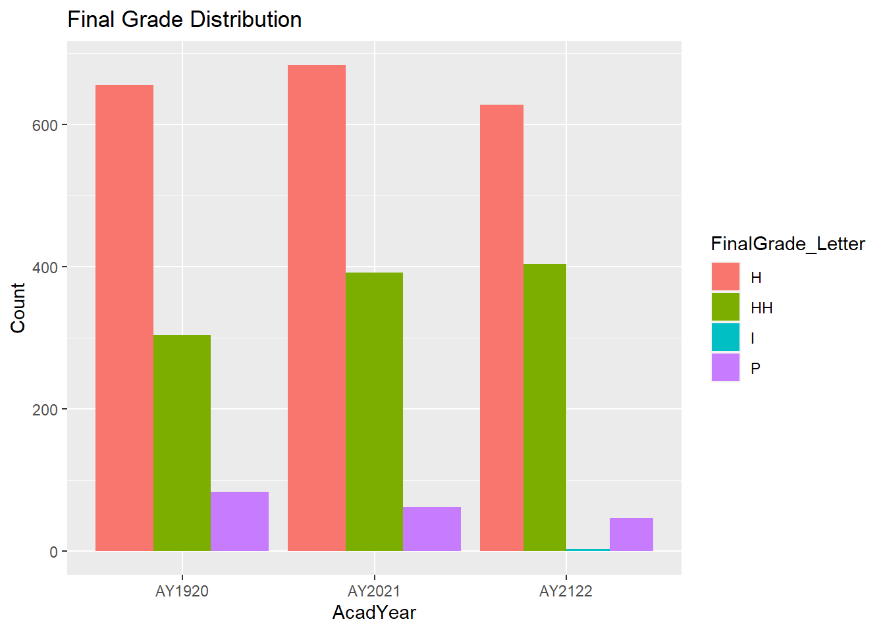
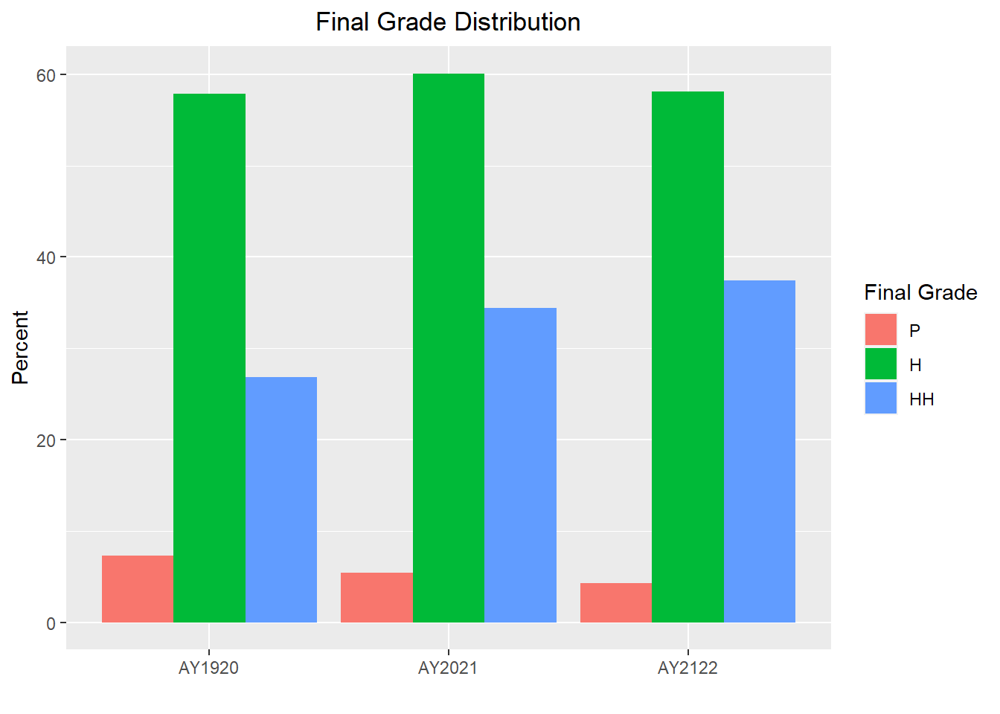
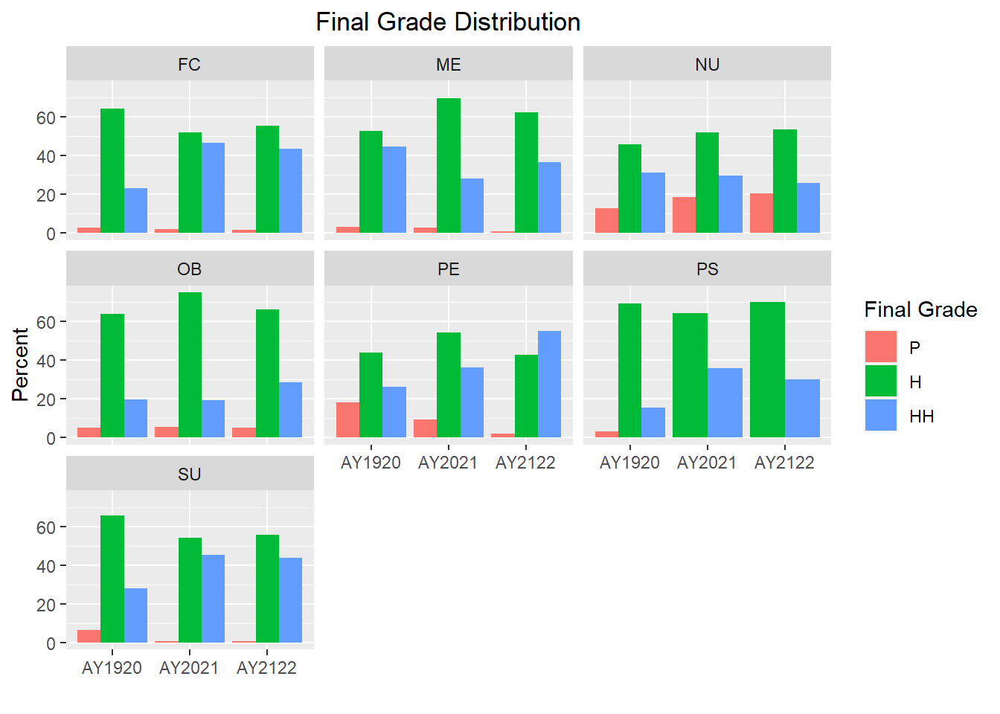
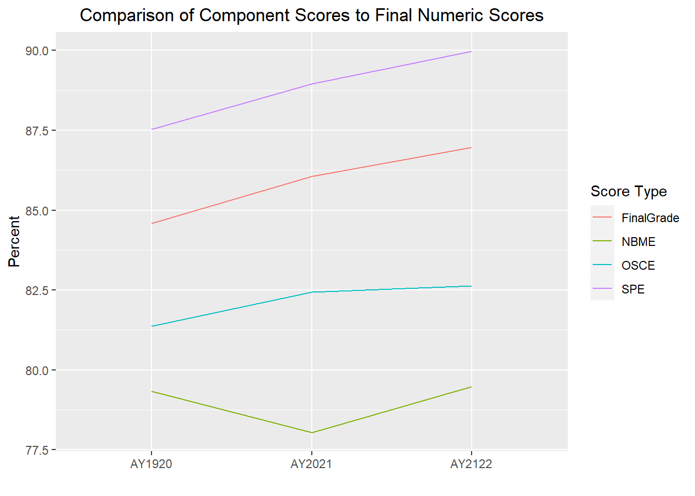
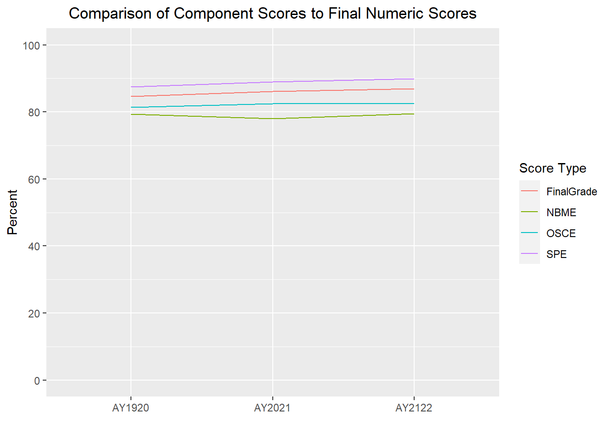
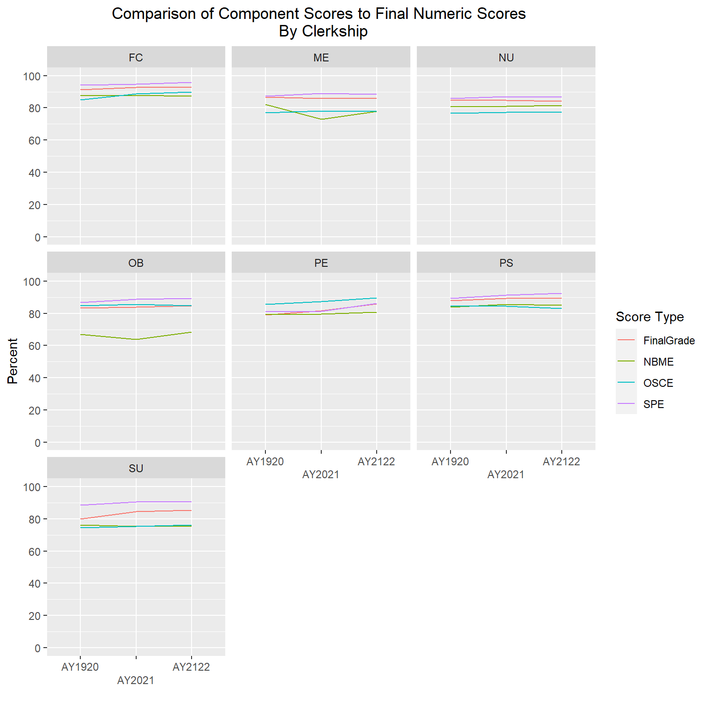
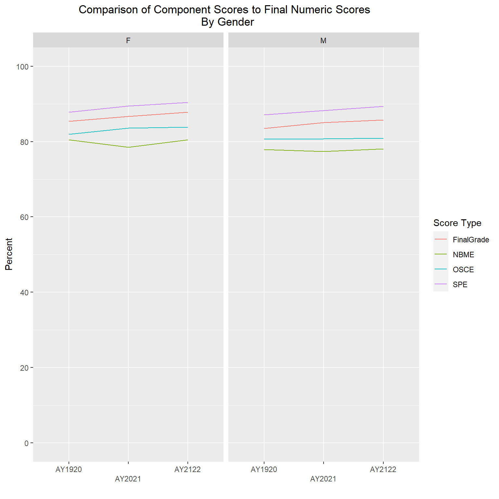
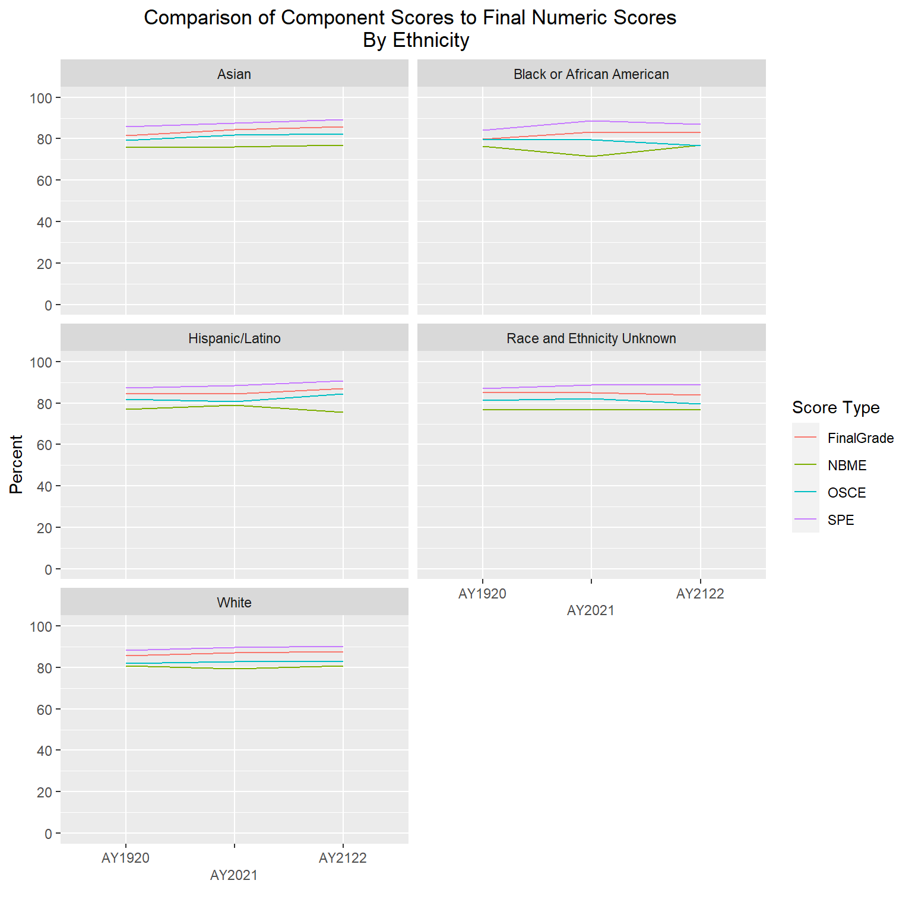
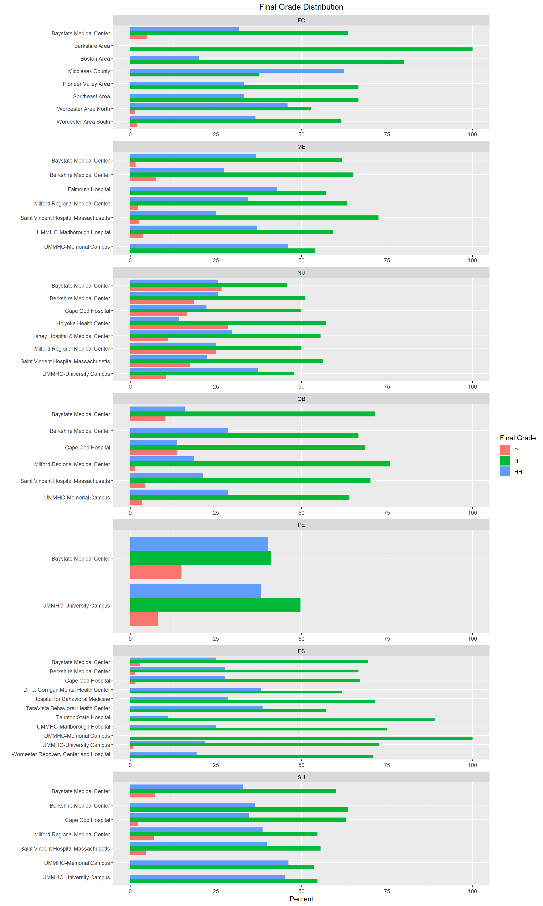

library(tidyverse)
library(summarytools)
library(dbplyr)
library(readxl)
library(tidyr)
library(ggplot2)
library(ggh4x)
knitr::opts_chunk$set(echo = TRUE, warning=FALSE, message=FALSE)Final Project: Michele Carlin
final_Project
final_project_data_description
3rd Year Medical Student Clerkship Grades
Introduction
For my final project, I will be analyzing data that comes from my full-time job. I work at a medical school and in the third year of the curriculum, the students complete seven different clerkships/rotations throughout the academic year, one in each of the following areas: Family Medicine (FC), Medicine (ME), Neurology (NU), ObGyn (OB), Pediatrics (PE), Psychiatry (PS), and Surgery (SU). Within each clerkship, students are assessed in a variety of ways. Student performance evaluations (SPEs) are completed by the physicians they work with in the clinical setting. Each student is evaluated by multiple physicians, with an average score calculated across all SPEs. The students also complete an Objective Structured Clinical Examination (OSCE) at the end of each clerkship where students are assessed by Standardized Patients (SPs) in various simulated patient encounters. Each SP is trained to portray a patient in a clinical setting with a specific chief complaint. At the end of the encounter, the SP completes a checklist on a variety of history and physical exam skills. Each clerkship OSCE has between 2-5 encounters that all students rotate through. Scores are calculated for each encounter and summarized as an overall OSCE score. In addition, students complete a multiple-choice National Board of Medical Examiners (NBME) exam at the end of each clerkship. Scores from these various grading components are used to calculate final grades.
Describe the data set(s).
The data is currently in two different excel files, one containing final grades from AY1920-AY2122, and another containing component grades (e.g., SPE, OSCE, NBME) from AY1920-AY2122. I will merge these data sets into a new ‘Grades’ data set, where each row will contain all student scores for one clerkship. In other words, each student will have seven (or fewer) rows of data (one for each clerkship they completed).
I will start by loading the following libraries.
Data Set #1: Read in and view summary of ‘FinalGrades’ data set. This excel file has 3 worksheets, one for each year (AY1920 - AY2122), that will be combined into one data set.
setwd("C:/Users/CarlinML/DACSS-601/601_Spring_2023/Posts/")
sheet <- excel_sheets("MicheleCarlin_FinalProjectData/AY1920-AY2122_FinalGrades.xlsx")
sheet[1] "AY1920" "AY2021" "AY2122"FinalGrades <- lapply(setNames(sheet, sheet), function(x) read_excel("MicheleCarlin_FinalProjectData/AY1920-AY2122_FinalGrades.xlsx", sheet=x))
FinalGrades <- bind_rows(FinalGrades, .id="Sheet")
View(FinalGrades)
FinalGrades <- FinalGrades %>%
rename("AcadYear" = "Sheet")
view(dfSummary(FinalGrades))The ‘FinalGrades’ data set contains 3351 rows and 10 columns (including academic year, student ID, subject area, catalog number, session, final letter grade, final numeric score, location_code, gender, and ethnicity).
Data set #2: Read in and view summary of ‘ComponentGrades’ data set. This excel file contains one worksheet.
ComponentGrades <- read_excel ("MicheleCarlin_FinalProjectData/AY1920-AY2122_ComponentGrades.xlsx")
View(ComponentGrades)
view(dfSummary(ComponentGrades))The ‘ComponentGrades’ dataset contains 3334 rows and 9 columns (including academic year, student ID, subject area, catalog number, session, location, as well as SPE, OSCE, and NBME scores).
From the data summary, I can see that the SPE scores are on a 4-point scale whereas the OSCE, NBME, and final numeric scores are on a 0-100% score. I will recode the SPE scores to be on a 0-100% score to make them more comparable.
ComponentGrades <- ComponentGrades %>%
mutate (SPE_new=SPE_Score/4 * 100)Joining Data Sets
I will now join the ‘FinalGrades’ and ‘ComponentGrades’ data sets into one, matching on ID and Subject.
Grades <- FinalGrades %>% full_join(ComponentGrades, by=c('ID','Subject')) %>%
select(-(SPE_Score))
View(Grades)
view(dfSummary(Grades))Data Description
The new ‘Grades’ data set contains 3351 rows and 17 columns.
Questions: Some of the questions we look to answer on an annual basis are listed below.
Is the distribution of final letter grades similar from year to year?
How comparable are component scores to final numeric scores at the aggregate level? I will also look at this comparison within the individual clerkships as well as across gender and ethnic groups. Our ethnicity categories are based on those used by the Integrated Postsecondary Education Data System (IPEDS), as we have to submit data on an annual basis to this national organization.
Multiple sites are needed to accommodate the number of students enrolled in each clerkship, therefore we are also interested in examining the data at the site level to determine if students are performing similarly regardless of what site they are assigned to.
Answering the 3rd question will assist in responding to the medical school’s accrediting body’s (Liaison Committee on Medical Education (LCME)) mandate that student experiences across various sites within the same clerkship should be similar.
Exploratory Analysis
I’ll start by looking at some basic summary statistics of the final grade and grading component variables.
Grades %>%
group_by(AcadYear, Subject) %>%
summarise(Avg_FINAL = mean(FinalGrade_Numeric),
Min_FINAL = min(FinalGrade_Numeric),
Max_FINAL = max(FinalGrade_Numeric),
Avg_SPE = mean(SPE_new),
Min_SPE = min(SPE_new),
Max_SPE = max(SPE_new),
Avg_OSCE = mean(OSCE_Score),
Min_OSCE = min(OSCE_Score),
Max_OSCE = max(OSCE_Score),
Avg_NBME = mean(NBME_Score),
Min_NBME = min(NBME_Score),
Max_NBME = max(NBME_Score)) %>%
print(n=21)# A tibble: 21 × 14
# Groups: AcadYear [3]
AcadYear Subject Avg_FINAL Min_FINAL Max_FI…¹ Avg_SPE Min_SPE Max_SPE Avg_O…²
<chr> <chr> <dbl> <dbl> <dbl> <dbl> <dbl> <dbl> <dbl>
1 AY1920 FC NA NA NA NA NA NA NA
2 AY1920 ME 86.7 64 99.9 NA NA NA NA
3 AY1920 NU NA NA NA NA NA NA NA
4 AY1920 OB 83.4 66.0 98.5 NA NA NA NA
5 AY1920 PE NA NA NA NA NA NA NA
6 AY1920 PS NA NA NA NA NA NA NA
7 AY1920 SU 80 40 100 NA NA NA NA
8 AY2021 FC 92.6 82.9 97.9 NA NA NA NA
9 AY2021 ME 85.8 67.8 99 89.0 74.2 98 78.3
10 AY2021 NU NA NA NA 86.9 58.2 100 77.2
11 AY2021 OB 83.8 69.8 94.8 88.8 66.7 100 85.6
12 AY2021 PE 81.6 57.6 98.4 81.3 50.5 99.2 87.4
13 AY2021 PS 89.3 77.9 96.1 NA NA NA NA
14 AY2021 SU NA NA NA 90.6 69 100 75.5
15 AY2122 FC 92.9 80.6 98.6 95.8 84.2 100 89.8
16 AY2122 ME NA NA NA NA NA NA NA
17 AY2122 NU NA NA NA 86.7 68.8 100 NA
18 AY2122 OB NA NA NA 89.2 71.1 100 84.7
19 AY2122 PE 85.9 67.7 98.1 86.3 71.2 100 89.5
20 AY2122 PS 89.5 77.8 96.6 92.6 74 100 83.1
21 AY2122 SU NA NA NA 90.7 69 100 76.2
# … with 5 more variables: Min_OSCE <dbl>, Max_OSCE <dbl>, Avg_NBME <dbl>,
# Min_NBME <dbl>, Max_NBME <dbl>, and abbreviated variable names ¹Max_FINAL,
# ²Avg_OSCEI am seeing a lot of NAs in the above table, therefore I will further examine the data to determine where/why we have missing data. I will filter on rows that contain one or NAs.
Grades[!complete.cases(Grades), ] %>%
select(AcadYear, Subject, Catalog.x, Session.x, FinalGrade_Letter, FinalGrade_Numeric, SPE_new, OSCE_Score, NBME_Score)The table above shows that 212 rows contain one or more NAs. As I page through the above data, I can see that the majority of the students with missing data are from AY1920, during the last session of the year (e.g., 3C3, 3C5, etc.). That is when the COVID pandemic first affected the medical students’ clinical rotations. Student rotations during this time period were modified due to hospital/clinic restrictions and therefore they were graded on a Satisfactory/Unsatisfactory scale instead of the typical grading scale of High Honors (HH), Honors (S), Pass (P), Fail (F). Students given a Satisfactory letter grade will be missing a final grade numeric score, as well as many, if not all, grading component scores for that rotation. Because of this, I will filter out all ‘S’ letter grades to see how many others have NAs.
Grades[!complete.cases(Grades), ] %>%
filter(FinalGrade_Letter != "S") %>%
select(AcadYear, Subject, Catalog.x, Session.x, FinalGrade_Letter, FinalGrade_Numeric, SPE_new, OSCE_Score, NBME_Score)I am now seeing that there are still 122 rows with one or more NAs. As I review the data in this table, I am reminded that the students in one of the longer clerkships (medicine or surgery) during the last few blocks of the academic year when the pandemic first started, were given an actual letter grade of HH/H/P vs. a Satisfactory grade, for the part of the clerkship they completed prior to the restrictions being put into place, however those students don’t all have component scores for the exams and OSCEs that should’ve taken place at the end of the rotation; therefore, I will exclude those rows as well. The remaining 16 rows are from AY2021 and AY2122, but because this data was obtained from the various clerkship administrators, I am unable to explain why they are missing one or more grades; therefore, I will exclude those as well.
Based on the above reviews, all NAs can be excluded; the following code will re-run the descriptive statistics excluding NAs.
Grades %>%
group_by(AcadYear, Subject) %>%
summarise(n_FINAL = sum(!is.na(FinalGrade_Numeric)),
Avg_FINAL = mean(FinalGrade_Numeric, na.rm=TRUE),
Min_FINAL = min(FinalGrade_Numeric, na.rm=TRUE),
Max_FINAL = max(FinalGrade_Numeric, na.rm=TRUE),
n_SPE = sum(!is.na(SPE_new)),
Avg_SPE = mean(SPE_new, na.rm=TRUE),
Min_SPE = min(SPE_new, na.rm=TRUE),
Max_SPE = max(SPE_new, na.rm=TRUE),
n_OSCE = sum(!is.na(OSCE_Score)),
Avg_OSCE = mean(OSCE_Score, na.rm=TRUE),
Min_OSCE = min(OSCE_Score, na.rm=TRUE),
Max_OSCE = max(OSCE_Score, na.rm=TRUE),
n_NBME = sum(!is.na(NBME_Score)),
Avg_NBME = mean(NBME_Score, na.rm=TRUE),
Min_NBME = min(NBME_Score, na.rm=TRUE),
Max_NBME = max(NBME_Score, na.rm=TRUE)) %>%
print(n=21)# A tibble: 21 × 18
# Groups: AcadYear [3]
AcadY…¹ Subject n_FINAL Avg_F…² Min_F…³ Max_F…⁴ n_SPE Avg_SPE Min_SPE Max_SPE
<chr> <chr> <int> <dbl> <dbl> <dbl> <int> <dbl> <dbl> <dbl>
1 AY1920 FC 139 91.3 78.4 97.0 140 94.1 71.5 100
2 AY1920 ME 160 86.7 64 99.9 108 87.3 70.5 98.8
3 AY1920 NU 126 84.9 65 98.8 143 85.9 52 100
4 AY1920 OB 172 83.4 66.0 98.5 153 86.7 57.8 100
5 AY1920 PE 142 79.1 57.8 98.2 142 81.1 57 98.2
6 AY1920 PS 137 87.8 76.8 96.5 134 89.3 70 100
7 AY1920 SU 168 80 40 100 136 88.7 65.8 99.5
8 AY2021 FC 166 92.6 82.9 97.9 165 94.8 81.4 100
9 AY2021 ME 161 85.8 67.8 99 161 89.0 74.2 98
10 AY2021 NU 160 84.8 65 99.6 162 86.9 58.2 100
11 AY2021 OB 164 83.8 69.8 94.8 164 88.8 66.7 100
12 AY2021 PE 162 81.6 57.6 98.4 162 81.3 50.5 99.2
13 AY2021 PS 159 89.3 77.9 96.1 158 91.4 65 100
14 AY2021 SU 163 84.4 60 100 164 90.6 69 100
15 AY2122 FC 150 92.9 80.6 98.6 150 95.8 84.2 100
16 AY2122 ME 152 86.2 54 99.2 153 88.4 77 98
17 AY2122 NU 150 84.1 66 99.2 152 86.7 68.8 100
18 AY2122 OB 156 84.8 69.2 96.0 157 89.2 71.1 100
19 AY2122 PE 149 85.9 67.7 98.1 149 86.3 71.2 100
20 AY2122 PS 160 89.5 77.8 96.6 160 92.6 74 100
21 AY2122 SU 154 85.4 60 100 158 90.7 69 100
# … with 8 more variables: n_OSCE <int>, Avg_OSCE <dbl>, Min_OSCE <dbl>,
# Max_OSCE <dbl>, n_NBME <int>, Avg_NBME <dbl>, Min_NBME <dbl>,
# Max_NBME <dbl>, and abbreviated variable names ¹AcadYear, ²Avg_FINAL,
# ³Min_FINAL, ⁴Max_FINALQuestion 1
Question #1: Is the distribution of final letter grades similar from year to year?
Grades %>%
filter(FinalGrade_Letter != "S") %>%
ggplot(aes(fill=FinalGrade_Letter, x=AcadYear)) +
geom_bar(position="dodge", stat="count") +
labs(title = "Final Grade Distribution", y = "Count")
Incomplete grades are typically resolved and replaced with an actual grade within a few months, which is why we are only seeing ‘Incompletes’ in AY2122 and there are only 2 students with that grade. Therefore, I will exclude ‘Incompletes’ from the graph (in addition to ‘S’ grades that have already been excluded).
I will also reorder the final letter grades so they are listed from lowest to highest (P-Pass, H=Honors, HH-High Honors), I will graph percents instead of counts, and will update the labels on the graph.
Grades$FinalGrade_Letter<- as.factor(Grades$FinalGrade_Letter)
Grades$FinalGrade_Letter<- factor(Grades$FinalGrade_Letter, levels = c("S","I","P","H","HH"))
Grades %>%
group_by(AcadYear, FinalGrade_Letter) %>%
summarize(num=n()) %>%
mutate(percent=num/sum(num)*100) %>%
filter(FinalGrade_Letter != "S" & FinalGrade_Letter != "I") %>%
ggplot(aes(x=AcadYear, y=percent, fill=FinalGrade_Letter)) +
geom_bar(position = "dodge", stat = "identity") +
labs(title = "Final Grade Distribution", y="Percent", x = "", fill="Final Grade")+
theme(plot.title = element_text(hjust = 0.5))
The distributions look very similar from year to year which is great, but now I will stratify the data by clerkship to see if we find the same from clerkship to clerkship.
Grades$Subject<- as.factor(Grades$Subject)
Grades$Subject<- factor(Grades$Subject, levels = c("FC","ME","NU","OB","PE","PS","SU"))
Grades %>%
group_by(AcadYear, Subject, FinalGrade_Letter) %>%
summarize(num=n()) %>%
mutate(percent=num/sum(num)*100) %>%
filter(FinalGrade_Letter != "S" & FinalGrade_Letter != "I") %>%
ggplot(aes(x=AcadYear, y=percent, fill=FinalGrade_Letter)) +
geom_bar(position = "dodge", stat = "identity") +
labs(title = "Final Grade Distribution", y="Percent", x = "", fill="Final Grade")+
theme(plot.title = element_text(hjust = 0.5))+
facet_wrap(~factor(Subject))
As shown in the graphs above, the distribution of final grades varies a bit more in some clerkships; however, further analysis would be needed to determine if any of those differences are statistically significant.
Question 2
Question #2: How do component scores compare to final numeric scores at the aggregate level, clerkship level, and across gender and ethnic groups?
To do this, I will need to pivot the wide data to long so that each row only contains one score.
Grades_long<-pivot_longer(Grades, col = c(FinalGrade_Numeric, OSCE_Score, NBME_Score, SPE_new),
names_to= "ScoreType",
values_to = "value")
View(Grades_long)
view(dfSummary(Grades_long))The pivot_long data set contains 13,404 rows and 15 columns.
The following line graph will provide average scores by AcadYear and ScoreType.
Grades_long <- Grades_long %>%
separate(ScoreType, c("ScoreType1", "ScoreType2"), "_")
Grades_long %>%
ggplot(aes(x = AcadYear, y = value, group = ScoreType1, color=ScoreType1)) + stat_summary(geom = "line", fun.y = mean) +
labs(title = "Comparison of Component Scores to Final Numeric Scores", y="Percent", x = "", color="Score Type") +
theme(plot.title = element_text(hjust = 0.5))
The difference between the Score Types is looking greater than it really is b/c the y-axis scale is 77.5-100; therefore, I will re-run forcing the scale to display 0-100 at 20 point increments.
Grades_long %>%
ggplot(aes(x = AcadYear, y = value, group = ScoreType1, color=ScoreType1)) + stat_summary(geom = "line", fun.y = mean) +
labs(title = "Comparison of Component Scores to Final Numeric Scores", y="Percent", x = "", color="Score Type") +
theme(plot.title = element_text(hjust = 0.5)) +
scale_y_continuous(limits = c(0, 100), breaks = seq(0, 100, by = 20))
We can see in the above graph that all 4 scores are very comparable, however further analysis could be conducted to determine if one grading component is better than another at predicting final clerkship scores.
The following line graphs will again show average scores by AcadYear and ScoreType, but this time stratified by clerkship, gender and ethnicity. I will exclude gender code ‘U’ and two ethnicities (“American Indian and Alaska Native” and “Native Hawaiian and Other Pacific Islander”) due to very small numbers of students in each of those groups.
Grades_long %>%
ggplot(aes(x = AcadYear, y = value, group = ScoreType1, color=ScoreType1)) +
stat_summary(geom = "line", fun.y = mean) +
labs(title = "Comparison of Component Scores to Final Numeric Scores \n By Clerkship", y="Percent", x = "", color="Score Type") +
theme(plot.title = element_text(hjust = 0.5)) +
scale_y_continuous(limits = c(0, 100), breaks = seq(0, 100, by = 20)) +
facet_wrap(~factor(Subject), ncol=3) +
scale_x_discrete(guide = guide_axis(n.dodge = 2))
Grades_long %>%
filter(Gender != "U") %>%
ggplot(aes(x = AcadYear, y = value, group = ScoreType1, color=ScoreType1)) +
stat_summary(geom = "line", fun.y = mean) +
labs(title = "Comparison of Component Scores to Final Numeric Scores \n By Gender", y="Percent", x = "", color="Score Type") +
theme(plot.title = element_text(hjust = 0.5)) +
scale_y_continuous(limits = c(0, 100), breaks = seq(0, 100, by = 20)) +
facet_wrap(~factor(Gender)) +
scale_x_discrete(guide = guide_axis(n.dodge = 2))
Grades_long %>%
filter(Ethnicity != "American Indian or Alaska Native" & Ethnicity != "Native Hawaiian or Other Pacific Islander") %>%
ggplot(aes(x = AcadYear, y = value, group = ScoreType1, color=ScoreType1)) +
stat_summary(geom = "line", fun.y = mean) +
labs(title = "Comparison of Component Scores to Final Numeric Scores \n By Ethnicity", y="Percent", x = "", color="Score Type") +
theme(plot.title = element_text(hjust = 0.5)) +
scale_y_continuous(limits = c(0, 100), breaks = seq(0, 100, by = 20)) +
facet_wrap(~factor(Ethnicity), ncol=2) +
scale_x_discrete(guide = guide_axis(n.dodge = 2))
The gender and ethnicity data is following a similar pattern as the final numeric scores, such that SPE are the highest, followed by final numeric, then OSCEs, with NBME having the lowest averages. The clerkship graphs are showing a bit more variability, but again, with all scores roughly in the high 70s to high 80s range, even though one component is averaging lower or higher than another doesn’t mean they are statistically different; further analysis would be needed to determine that.
Question 3
- Are students performing similarly regardless of what site they were assigned to.
First I will examine the list of sites by clerkship.
unique(Grades[c("Subject","Location")]) %>%
arrange (Subject)Upon reviewing the above table, I noticed that there are several locations that are actually specific ward names within a particular hospital; therefore, I will combine those ward-specific locations into the main hospital name to reduce the number of locations (e.g., UMMHC-University Haidak and UMMHC-University ACS will be combined into UMMHC-University Campus).
First I will create a new location variable that will be an exact copy of the original location variable, and then I will recode some of those locations.
Grades <- Grades %>%
mutate (Location_new = Location)
Grades <- Grades %>%
mutate (Location_new = case_when (Location == "Baystate Medical Center - Springfield, MA" ~ "Baystate Medical Center",
Location == "UMMHC-8 East" ~ "UMMHC-University Campus",
Location == "UMMHC-C/L" ~ "UMMHC-University Campus",
Location == "UMMHC-C/L (Addiction)" ~ "UMMHC-University Campus",
Location == "UMMHC-C/L (Pediatric)" ~ "UMMHC-University Campus",
Location == "Emergency Mental Health Service/Memorial C/L" ~ "UMMHC-Memorial Campus",
Location == "UMMHC-Memorial Colorectal" ~ "UMMHC-Memorial Campus",
Location == "UMMHC-Memorial MIS" ~ "UMMHC-Memorial Campus",
Location == "UMMHC-Memorial Surgical Oncology" ~ "UMMHC-Memorial Campus",
Location == "UMMHC-University ACS" ~ "UMMHC-University Campus",
Location == "UMMHC-University Haidak" ~ "UMMHC-University Campus",
Location == "Worcester Recovery Center and Hospital - Adolescent Unit" ~ "Worcester Recovery Center and Hospital",
Location == "Worcester Recovery Center and Hospital - Adult Unit" ~ "Worcester Recovery Center and Hospital",
TRUE ~ Location))
select(Grades, Location, Location_new)The following graphs will show the distribution of final letter grades by site (one graph per clerkship).
Grades %>%
group_by(Subject, Location_new, FinalGrade_Letter) %>%
summarize(num=n()) %>%
mutate(percent=num/sum(num)*100) %>%
filter(FinalGrade_Letter != "S" & FinalGrade_Letter != "I") %>%
ggplot(aes(x=percent, y=Location_new, fill=FinalGrade_Letter)) +
geom_bar(position = position_dodge(preserve="single"), stat = "identity") +
scale_y_discrete(limits=rev) +
labs(title = "Final Grade Distribution", y="", x = "Percent", fill="Final Grade")+
theme(plot.title = element_text(hjust = 0.5)) +
facet_wrap2(~factor(Subject), axes="all", scale="free_y", ncol = 1)
As I review the above graphs, I am seeing that the final letter grade distribution varies from location to location in some clerkships more than others. For example, NU, OB, and PE look pretty similar across most locations, however FC and PS tend to have more variation from location to location. Further analysis would be needed to determine if we are in compliance with LCME standards. We would also look at grading component scores by location to see if students at particular locations are more (or less) prepared for OSCEs and/or NBME exams. We would also be able to determine if physicians at certain locations are stricter (or more lenient) with their grading on SPEs than other locations which would outline where more faculty development may be needed.
In conclusion, it seems that while more analysis is definitely needed, there weren’t any glaring issues with consistency from year to year or location to location that really stood out. This type of analysis is done on an annual basis as it is important to let academic leaders at our institution know if we start to notice any negative trends with respect to gender or ethnicity inequalities that need to be addressed immediately, etc. In addition, as we onboard new locations for our clerkship students to rotate at, we pay particular attention to their data as we may need to reach out to those locations to offer additional support and resources for implementing our curriculum so their students are performing similarly to students at other locations.
citation()
To cite R in publications use:
R Core Team (2022). R: A language and environment for statistical
computing. R Foundation for Statistical Computing, Vienna, Austria.
URL https://www.R-project.org/.
A BibTeX entry for LaTeX users is
@Manual{,
title = {R: A Language and Environment for Statistical Computing},
author = {{R Core Team}},
organization = {R Foundation for Statistical Computing},
address = {Vienna, Austria},
year = {2022},
url = {https://www.R-project.org/},
}
We have invested a lot of time and effort in creating R, please cite it
when using it for data analysis. See also 'citation("pkgname")' for
citing R packages.Bibliography
R Core Team (2022). R: A language and environment for statistical computing. R Foundation for Statistical Computing, Vienna, Austria. URL https://www.R-project.org/.
OASIS Curriculum Management and Student Scheduling (2023). Accessed April 2, 2023. https://umassmed.oasisscheduling.com/.
Liaison Committee on Medical Education (2023). Accessed May 6, 2023. https://lcme.org/publications/.
Integrated Postsecondary Education Data System (2023). Accessed April 2, 2023. https://nces.ed.gov/ipeds/.